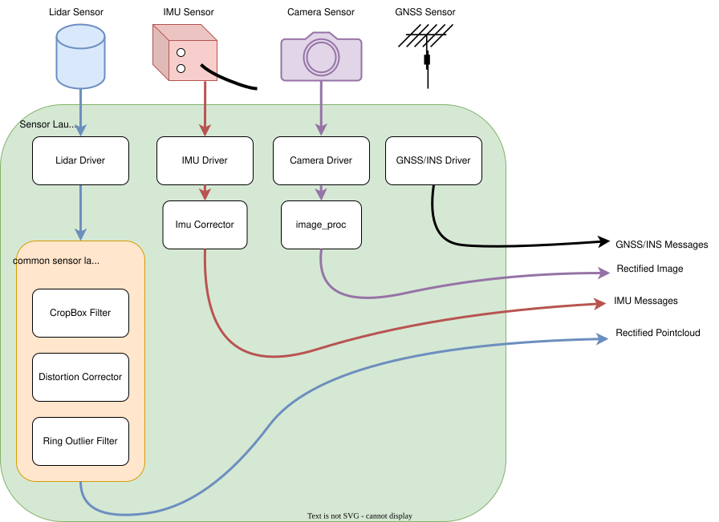
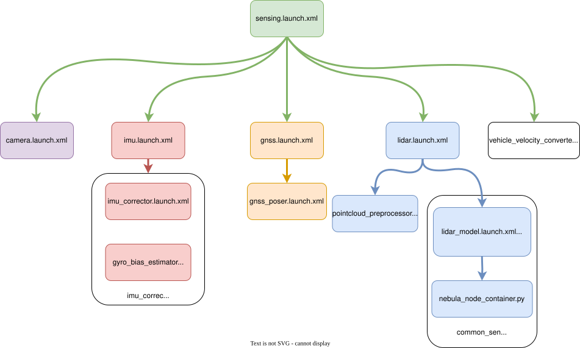

创建传感器模型#
介绍#
本页介绍了传感器型号的以下软件包：
common_sensor_launch<YOUR-VEHICLE-NAME>_sensor_kit_description<YOUR-VEHICLE-NAME>_sensor_kit_launch
我们通过在 创建 Autoware 存储库 页面上描述步骤.
创建了 tutorial_vehicle_sensor_kit_launch 所述步骤的实现示例.
请确保
<YOUR-OWN-AUTOWARE-DIR>/
└─ src/
└─ sensor_kit/
└─ <YOUR-VEHICLE-NAME>_sensor_kit_launch/
├─ common_sensor_launch/
├─ <YOUR-VEHICLE-NAME>_sensor_kit_description/
└─ <YOUR-VEHICLE-NAME>_sensor_kit_launch/
如果您的 fork Autoware 元存储库不包含 _sensor_kit_launch
如上图所示,请将您分叉的 <YOUR-VEHICLE-NAME>_sensor_kit_launch 仓库添加到 autoware.repos 文件中
并在终端中运行 vcs import src < autoware.repos 命令,并在 autoware.repos 文件中导入新包含的存储库.
现在,我们已准备好为我们的车辆修改以下传感器模型包.首先,我们需要重命名描述并启动包：
<YOUR-VEHICLE-NAME>_sensor_kit_launch/
├─ common_sensor_launch/
- ├─ sample_sensor_kit_description/
+ ├─ <YOUR-VEHICLE-NAME>_sensor_kit_description/
- └─ sample_sensor_kit_launch/
+ └─ <YOUR-VEHICLE-NAME>_sensor_kit_launch/
然后,我们将在 sample_sensor_kit_description 和 sample_sensor_kit_launch 包的 package.xml 文件和 CMakeLists.txt 文件中更改我们的包名称. 所以,打开package.xml文件,并使用您喜欢的任何文本编辑器或 IDE CMakeLists.txt 文件,并执行以下更改：
更改 package.xml 文件中的 <name> 属性：
<package format="3">
- <name>sample_sensor_kit_description</name>
+ <name><YOUR-VEHICLE-NAME>_sensor_kit_description</name>
<version>0.1.0</version>
<description>The sensor_kit_description package</description>
...
...
更改 CmakeList.txt 文件中的 project() 方法.
cmake_minimum_required(VERSION 3.5)
- project(sample_sensor_kit_description)
+ project(<YOUR-VEHICLE-NAME>_sensor_kit_description)
find_package(ament_cmake_auto REQUIRED)
...
...
请记住为 BOTH 应用名称更改和项目方法 <YOUR-VEHICLE-NAME>_sensor_kit_description 和 <YOUR-VEHICLE-NAME>_sensor_kit_launch ROS 2 软件包.
完成后,我们可以继续构建上述包：
cd <YOUR-AUTOWARE-DIR>
colcon build --symlink-install --cmake-args -DCMAKE_BUILD_TYPE=Release --packages-up-to <YOUR-VEHICLE-NAME>_sensor_kit_description <YOUR-VEHICLE-NAME>_sensor_kit_launch
传感器描述#
此软件包的主要用途是描述传感器帧 ID、所有传感器的校准参数,以及它们与 URDF 文件的链接.
sensor_kit_description 包的文件夹结构为：
<YOUR-VEHICLE-NAME>_sensor_kit_description/
├─ config/
│ ├─ sensor_kit_calibration.yaml
│ └─ sensors_calibration.yaml
└─ urdf/
├─ sensor_kit.xacro
└─ sensors.xacro
现在,我们将根据我们的传感器设计修改这些文件.
sensor_kit_calibration.yaml#
该文件定义了以 sensor_kit_base_link 为父框架的传感器的安装位置和方向.
我们可以假设 sensor_kit_base_link 框架位于主激光雷达传感器的底部.
我们必须以 [x, y, z, roll, pitch, yaw] 的 euler 格式创建此文件.
此外,我们将这些值设置为 0 ,参考 传感器校准 步骤.
我们将为此文件定义新帧,并将它们连接 .xacro 文件.
我们建议将您的激光雷达传感器框架命名为 velodyne_top ,
您可以将 \_base_link 添加到我们的校准 .yaml 文件中.
因此,示例文件必须如下所示：
sensor_kit_base_link:
velodyne_top_base_link:
x: 0.000000
y: 0.000000
z: 0.000000
roll: 0.000000
pitch: 0.000000
yaw: 0.000000
camera0/camera_link:
x: 0.000000
y: 0.000000
z: 0.000000
roll: 0.000000
pitch: 0.000000
yaw: 0.000000
...
...
tutorial_vehicle 文件包含一台相机、两台激光雷达和一个 GNSS/INS 传感器.
??? 注意 tutorial_vehicle_sensor_kit_description 的 sensor_kit_calibration.yaml
```yaml
sensor_kit_base_link:
camera0/camera_link: # 相机
x: 0.0
y: 0.0
z: 0.0
roll: 0.0
pitch: 0.0
yaw: 0.0
rs_helios_top_base_link: # 顶部雷达
x: 0.0
y: 0.0
z: 0.0
roll: 0.0
pitch: 0.0
yaw: 0.0
rs_bpearl_front_base_link: # 正前方前置雷达
x: 0.0
y: 0.0
z: 0.0
roll: 0.0
pitch: 0.0
yaw: 0.0
GNSS_INS/gnss_ins_link: # GNSS/INS GPS
x: 0.0
y: 0.0
z: 0.0
roll: 0.0
pitch: 0.0
yaw: 0.0
```
sensors_calibration.yaml#
此文件定义 sensor_kit_base_link (子框架) 的安装位置和方向
将 base_link 作为父帧.
在 Autoware, base_link 是指后桥中心在地面上的投影.
有关更多信息,您可以查看 车辆尺寸 页面.
为此,您可以使用 CAD 值,但现在我们将用 0 填充这些值.
base_link:
sensor_kit_base_link:
x: 0.000000
y: 0.000000
z: 0.000000
roll: 0.000000
pitch: 0.000000
yaw: 0.000000
现在,我们已准备好实现 .xacro 文件.这些文件提供链接我们的传感器框架和添加传感器 urdf 文件
sensor_kit.xacro#
我们将添加传感器并从此文件中删除不必要的 xacro.
例如,我们想要要从传感器驱动程序添加带有 velodyne_top 帧的 LiDAR 传感器,
我们将以下 xacro 添加到我们的 sensor_kit.xacro 文件中.
请将您的传感器添加到此文件中,并删除不必要的传感器 xacros.
<!-- lidar -->
<xacro:VLS-128 parent="sensor_kit_base_link" name="velodyne_top" topic="/points_raw" hz="10" samples="220" gpu="$(arg gpu)">
<origin
xyz="${calibration[`sensor_kit_base_link`][`velodyne_top_base_link`][`x`]}
${calibration[`sensor_kit_base_link`][`velodyne_top_base_link`][`y`]}
${calibration[`sensor_kit_base_link`][`velodyne_top_base_link`][`z`]}"
rpy="${calibration[`sensor_kit_base_link`][`velodyne_top_base_link`][`roll`]}
${calibration[`sensor_kit_base_link`][`velodyne_top_base_link`][`pitch`]}
${calibration[`sensor_kit_base_link`][`velodyne_top_base_link`][`yaw`]}"
/>
</xacro:VLS-128>
以下是 tutorial_vehicle 的示例 xacro 文件,其中包含一个摄像头、两个激光雷达和一个 GNSS/INS 传感器.
??? 注意 tutorial_vehicle_sensor_kit_description 的 sensor_kit.xacro
```xml
<?xml version="1.0"?>
<robot xmlns:xacro="http://ros.org/wiki/xacro">
<xacro:macro name="sensor_kit_macro" params="parent x y z roll pitch yaw">
<xacro:include filename="$(find velodyne_description)/urdf/VLP-16.urdf.xacro"/>
<xacro:include filename="$(find vls_description)/urdf/VLS-128.urdf.xacro"/>
<xacro:include filename="$(find camera_description)/urdf/monocular_camera.xacro"/>
<xacro:include filename="$(find imu_description)/urdf/imu.xacro"/>
<xacro:arg name="gpu" default="false"/>
<xacro:arg name="config_dir" default="$(find tutorial_vehicle_sensor_kit_description)/config"/>
<xacro:property name="sensor_kit_base_link" default="sensor_kit_base_link"/>
<joint name="${sensor_kit_base_link}_joint" type="fixed">
<origin rpy="${roll} ${pitch} ${yaw}" xyz="${x} ${y} ${z}"/>
<parent link="${parent}"/>
<child link="${sensor_kit_base_link}"/>
</joint>
<link name="${sensor_kit_base_link}">
<origin rpy="0 0 0" xyz="0 0 0"/>
</link>
<!-- sensor -->
<xacro:property name="calibration" value="${xacro.load_yaml(`$(arg config_dir)/sensor_kit_calibration.yaml`)}"/>
<!-- lidar -->
<xacro:VLS-128 parent="sensor_kit_base_link" name="rs_helios_top" topic="/points_raw" hz="10" samples="220" gpu="$(arg gpu)">
<origin
xyz="${calibration[`sensor_kit_base_link`][`rs_helios_top_base_link`][`x`]}
${calibration[`sensor_kit_base_link`][`rs_helios_top_base_link`][`y`]}
${calibration[`sensor_kit_base_link`][`rs_helios_top_base_link`][`z`]}"
rpy="${calibration[`sensor_kit_base_link`][`rs_helios_top_base_link`][`roll`]}
${calibration[`sensor_kit_base_link`][`rs_helios_top_base_link`][`pitch`]}
${calibration[`sensor_kit_base_link`][`rs_helios_top_base_link`][`yaw`]}"
/>
</xacro:VLS-128>
<xacro:VLP-16 parent="sensor_kit_base_link" name="rs_bpearl_front" topic="/points_raw" hz="10" samples="220" gpu="$(arg gpu)">
<origin
xyz="${calibration[`sensor_kit_base_link`][`rs_bpearl_front_base_link`][`x`]}
${calibration[`sensor_kit_base_link`][`rs_bpearl_front_base_link`][`y`]}
${calibration[`sensor_kit_base_link`][`rs_bpearl_front_base_link`][`z`]}"
rpy="${calibration[`sensor_kit_base_link`][`rs_bpearl_front_base_link`][`roll`]}
${calibration[`sensor_kit_base_link`][`rs_bpearl_front_base_link`][`pitch`]}
${calibration[`sensor_kit_base_link`][`rs_bpearl_front_base_link`][`yaw`]}"
/>
</xacro:VLP-16>
<!-- camera -->
<xacro:monocular_camera_macro
name="camera0/camera"
parent="sensor_kit_base_link"
namespace=""
x="${calibration[`sensor_kit_base_link`][`camera0/camera_link`][`x`]}"
y="${calibration[`sensor_kit_base_link`][`camera0/camera_link`][`y`]}"
z="${calibration[`sensor_kit_base_link`][`camera0/camera_link`][`z`]}"
roll="${calibration[`sensor_kit_base_link`][`camera0/camera_link`][`roll`]}"
pitch="${calibration[`sensor_kit_base_link`][`camera0/camera_link`][`pitch`]}"
yaw="${calibration[`sensor_kit_base_link`][`camera0/camera_link`][`yaw`]}"
fps="30"
width="800"
height="400"
fov="1.3"
/>
<!-- gnss -->
<xacro:imu_macro
name="gnss"
parent="sensor_kit_base_link"
namespace=""
x="${calibration[`sensor_kit_base_link`][`gnss_link`][`x`]}"
y="${calibration[`sensor_kit_base_link`][`gnss_link`][`y`]}"
z="${calibration[`sensor_kit_base_link`][`gnss_link`][`z`]}"
roll="${calibration[`sensor_kit_base_link`][`gnss_link`][`roll`]}"
pitch="${calibration[`sensor_kit_base_link`][`gnss_link`][`pitch`]}"
yaw="${calibration[`sensor_kit_base_link`][`gnss_link`][`yaw`]}"
fps="100"
/>
</xacro:macro>
</robot>
```
sensors.xacro#
此文件将我们的 sensor_kit 主框架 (sensor_kit_base_link) 链接到 base_link.
此外,您还有将直接校准为 base_link 的传感器,您可以将其添加到此处.
以下是 sample_sensor_kit_description 包的 sensors.xacro 文件：(velodyne_rear 变换直接与 base_link 一起使用)
<?xml version="1.0"?>
<robot name="vehicle" xmlns:xacro="http://ros.org/wiki/xacro">
<xacro:arg name="config_dir" default="$(find sample_sensor_kit_description)/config"/>
<xacro:property name="calibration" value="${xacro.load_yaml(`$(arg config_dir)/sensors_calibration.yaml`)}"/>
<!-- sensor kit -->
<xacro:include filename="sensor_kit.xacro"/>
<xacro:sensor_kit_macro
parent="base_link"
x="${calibration[`base_link`][`sensor_kit_base_link`][`x`]}"
y="${calibration[`base_link`][`sensor_kit_base_link`][`y`]}"
z="${calibration[`base_link`][`sensor_kit_base_link`][`z`]}"
roll="${calibration[`base_link`][`sensor_kit_base_link`][`roll`]}"
pitch="${calibration[`base_link`][`sensor_kit_base_link`][`pitch`]}"
yaw="${calibration[`base_link`][`sensor_kit_base_link`][`yaw`]}"
/>
<!-- embedded sensors -->
<xacro:include filename="$(find velodyne_description)/urdf/VLP-16.urdf.xacro"/>
<xacro:VLP-16 parent="base_link" name="velodyne_rear" topic="velodyne_rear/velodyne_points" hz="10" samples="220" gpu="false">
<origin
xyz="${calibration[`base_link`][`velodyne_rear_base_link`][`x`]}
${calibration[`base_link`][`velodyne_rear_base_link`][`y`]}
${calibration[`base_link`][`velodyne_rear_base_link`][`z`]}"
rpy="${calibration[`base_link`][`velodyne_rear_base_link`][`roll`]}
${calibration[`base_link`][`velodyne_rear_base_link`][`pitch`]}
${calibration[`base_link`][`velodyne_rear_base_link`][`yaw`]}"
/>
</xacro:VLP-16>
</robot>
在我们的辅导车上, base_link 没有直接的传感器变换,
因此,我们的 sensors.xacro 文件仅包含 base_link 和 sensor_kit_base_link 链接.
??? 注意 `sensors.xacro for tutorial_vehicle_sensor_kit_description
```xml
<?xml version="1.0"?>
<robot name="vehicle" xmlns:xacro="http://ros.org/wiki/xacro">
<xacro:arg name="config_dir" default="$(find tutorial_vehicle_sensor_kit_description)/config"/>
<xacro:property name="calibration" value="${xacro.load_yaml(`$(arg config_dir)/sensors_calibration.yaml`)}"/>
<!-- sensor kit -->
<xacro:include filename="sensor_kit.xacro"/>
<xacro:sensor_kit_macro
parent="base_link"
x="${calibration[`base_link`][`sensor_kit_base_link`][`x`]}"
y="${calibration[`base_link`][`sensor_kit_base_link`][`y`]}"
z="${calibration[`base_link`][`sensor_kit_base_link`][`z`]}"
roll="${calibration[`base_link`][`sensor_kit_base_link`][`roll`]}"
pitch="${calibration[`base_link`][`sensor_kit_base_link`][`pitch`]}"
yaw="${calibration[`base_link`][`sensor_kit_base_link`][`yaw`]}"
/>
</robot>
```
完成 sensor_kit_calibration.yaml、sensors_calibration.yaml、sensor_kit.xacro 、sensors.xacro 文件,我们的传感器描述包就完成了,
我们将继续修改 <YOUR-VEHICLE-NAME>_sensor_kit_launch 包.
启动传感器#
在此套件 (<YOUR-VEHICLE-NAME>_sensor_kit_launch), 我们将推出我们的传感器及其管道.
因此,我们还将使用 common_sensor_launch 包来启动激光雷达传感管道.下图演示了我们的传感器管道,我们将在本节中构建该管道.

这个 <YOUR-VEHICLE-NAME>_sensor_kit_launch 包文件夹结构,如下所示：
<YOUR-VEHICLE-NAME>_sensor_kit_launch/
├─ config/
├─ data/
└─ launch/
+ ├─ camera.launch.xml
+ ├─ gnss.launch.xml
+ ├─ imu.launch.xml
+ ├─ lidar.launch.xml
+ ├─ pointcloud_preprocessor.launch.py
+ └─ sensing.launch.xml
所以,我们将修改启动文件它位于用于启动和作传感器的 launch 文件夹. 主启动文件是 sensing.launch.xml.
此启动文件将启动其他传感启动文件.当前 sensor_kit_launch 包的 autoware 传感启动文件设计如下图所示.

sensing.launch.xml 还推出了 autoware_vehicle_velocity_converter 包,
用于将 gyro_odometer 节点的 autoware_auto_vehicle_msgs：：msg：：VelocityReport 消息转换为 geometry_msgs：：msg：：TwistWithCovarianceStamped.
所以,确定您的 vehicle_interface 发布类型为 autoware_auto_vehicle_msgs：：msg：：VelocityReport 的 /vehicle/status/velocity_status 主题,
或者您必须在 sensing.launch.xml 中更新 input_vehicle_velocity_topic .
...
<include file="$(find-pkg-share autoware_vehicle_velocity_converter)/launch/vehicle_velocity_converter.launch.xml">
- <arg name="input_vehicle_velocity_topic" value="/vehicle/status/velocity_status"/>
+ <arg name="input_vehicle_velocity_topic" value="<YOUR-VELOCITY-STATUS-TOPIC>"/>
<arg name="output_twist_with_covariance" value="/sensing/vehicle_velocity_converter/twist_with_covariance"/>
</include>
...
启动雷达#
首先让我们修改 lidar.launch.xml 文件,以便使用 Autoware 启动我们的 LiDAR 传感器驱动程序.
请在 GitHub存储库 中通过 nebula 驱动程序检查支持的激光雷达传感器.
如果您使用的是 Velodyne Lidar 传感器,
您可以使用 sample_sensor_kit_launch 模板,
但是您需要更新 sensor_id、data_port、sensor_frame 和其他必要的更改(max_range、scan_phase)参数等.
<group>
- <push-ros-namespace namespace="left"/>
+ <push-ros-namespace namespace="<YOUR-SENSOR-NAMESPACE>"/>
<include file="$(find-pkg-share common_sensor_launch)/launch/velodyne_VLP16.launch.xml">
<arg name="max_range" value="5.0"/>
- <arg name="sensor_frame" value="velodyne_left"/>
+ <arg name="sensor_frame" value="<YOUR-SENSOR-FRAME>"/>
- <arg name="sensor_ip" value="192.168.1.202"/>
+ <arg name="sensor_ip" value="<YOUR-SENSOR-IP>"/>
<arg name="host_ip" value="$(var host_ip)"/>
- <arg name="data_port" value="2369"/>
+ <arg name="data_port" value=<YOUR-DATA-PORT>/>
<arg name="scan_phase" value="180.0"/>
<arg name="cloud_min_angle" value="300"/>
<arg name="cloud_max_angle" value="60"/>
<arg name="launch_driver" value="$(var launch_driver)"/>
<arg name="vehicle_mirror_param_file" value="$(var vehicle_mirror_param_file)"/>
<arg name="use_pointcloud_container" value="$(var use_pointcloud_container)"/>
<arg name="container_name" value="$(var pointcloud_container_name)"/>
</include>
</group>
请根据您的传感器架构添加类似的启动组.
例如,我们将 Robosense 激光雷达用于我们的 tutorial_vehicle ,
所以 Robosense Lidar 的激光雷达群(即 Bpearl)应该是这样的结构：
<group>
<push-ros-namespace namespace="<YOUR-SENSOR-NAMESPACE>"/>
<include file="$(find-pkg-share common_sensor_launch)/launch/robosense_Bpearl.launch.xml">
<arg name="max_range" value="30.0"/>
<arg name="sensor_frame" value="<YOUR-ROBOSENSE-SENSOR-FRAME>"/>
<arg name="sensor_ip" value="<YOUR-ROBOSENSE-SENSOR-IP>"/>
<arg name="host_ip" value="$(var host_ip)"/>
<arg name="data_port" value="<YOUR-ROBOSENSE-SENSOR-DATA-PORT>"/>
<arg name="gnss_port" value="<YOUR-ROBOSENSE-SENSOR-GNSS-PORT>"/>
<arg name="scan_phase" value="0.0"/>
<arg name="launch_driver" value="$(var launch_driver)"/>
<arg name="vehicle_mirror_param_file" value="$(var vehicle_mirror_param_file)"/>
<arg name="container_name" value="pointcloud_container"/>
</include>
</group>
如果您使用的是禾赛激光雷达 PandarQT64, 请查看 Nebula 驱动程序页面了解支持的传感器,
您可以在 lidar.launch.xml 中添加类似于以下结构的组：
<group>
<push-ros-namespace namespace="<YOUR-SENSOR-NAMESPACE>"/>
<include file="$(find-pkg-share common_sensor_launch)/launch/hesai_PandarQT64.launch.xml">
<arg name="max_range" value="100"/>
<arg name="sensor_frame" value="<YOUR-HESAI-SENSOR-FRAME>"/>
<arg name="sensor_ip" value="<YOUR-HESAI-SENSOR-IP>"/>
<arg name="host_ip" value="$(var host_ip)"/>
<arg name="data_port" value="<YOUR-HESAI-SENSOR-DATA-PORT>"/>
<arg name="scan_phase" value="0.0"/>
<arg name="cloud_min_angle" value="0"/>
<arg name="cloud_max_angle" value="360"/>
<arg name="launch_driver" value="$(var launch_driver)"/>
<arg name="vehicle_mirror_param_file" value="$(var vehicle_mirror_param_file)"/>
<arg name="use_pointcloud_container" value="$(var use_pointcloud_container)"/>
<arg name="container_name" value="$(var pointcloud_container_name)"/>
</include>
</group>
您可以为 hesai_PandarQT64.launch.xml 作为示例.
nebula_node_container.py 为 autoware 创建 Lidar 管道, 为每个 LiDAR 构建了 PointCloud 预处理管道,请查看 autoware_pointcloud_preprocessor 包以获取滤波器信息.
例如,如果您想更改 outlier_filter 方法,您可以按如下方式修改管道组件：
nodes.append(
ComposableNode(
package="autoware_pointcloud_preprocessor",
- plugin="autoware::pointcloud_preprocessor::RingOutlierFilterComponent",
- name="ring_outlier_filter",
+ plugin="autoware::pointcloud_preprocessor::DualReturnOutlierFilterComponent",
+ name="dual_return_outlier_filter",
remappings=[
("input", "rectified/pointcloud_ex"),
("output", "pointcloud"),
],
extra_arguments=[{"use_intra_process_comms": LaunchConfiguration("use_intra_process")}],
)
)
我们将为我们的 tutorial_vehicle 使用默认的 pointcloud_preprocessor 管道. 因此我们不会修改 nebula_node_container.py.
启动相机#
在本节中,我们将为 Autoware for tutorial_vehicle 启动摄像头驱动程序和 2D 检测管道.
我们这样做的原因是有一台计算机可用于 tutorial_vehicle.
如果您使用两台或多台计算机进行 Autoware,您可以分别启动 Camera 和 2D Detection(检测) 管道.
例如,您可以克隆相机驱动程序.位于 src/sensor_component/external 文件夹
(请不要忘记将此驱动程序添加到 autoware.repos 文件中)：
<YOUR-AUTOWARE-DIR>
└─ src/
└─ sensor_component/
└─ external/
└─ YOUR-CAMERA-DRIVER
之后,您只需在 camera.launch.xml 中添加相机驱动程序即可：
...
+ <include file="$(find-pkg-share <YOUR-SENSOR-DRIVER>)/launch/YOUR-CAMERA-LAUNCH-FILE">
...
然后,您可以通过在 design 上添加 yolo.launch.xml 来启动 tensorrt_yolo 节点,如下所示： 即它包含在 autwoare.universe 的 tier4_perception_launch 包中.
image_number 参数定义您的相机编号
<include file="$(find-pkg-share tensorrt_yolo)/launch/yolo.launch.xml">
<arg name="image_raw0" value="$(var image_raw0)"/>
<arg name="image_raw1" value="$(var image_raw1)"/>
<arg name="image_raw2" value="$(var image_raw2)"/>
<arg name="image_raw3" value="$(var image_raw3)"/>
<arg name="image_raw4" value="$(var image_raw4)"/>
<arg name="image_raw5" value="$(var image_raw5)"/>
<arg name="image_raw6" value="$(var image_raw6)"/>
<arg name="image_raw7" value="$(var image_raw7)"/>
<arg name="image_number" value="$(var image_number)"/>
</include>
由于我们使用同一台计算机进行 2D 检测管道和所有 Autoware 节点, 我们将设计我们的摄像头和 2D 检测管道,使用 可组合节点和容器 结构.
因此,它将减少我们的网络接口使用量.首先,让我们从我们的相机传感器开始：
清醒的幻视 TRIO54S.
我们将此传感器与 autowarefoundation 组织的 lucid_vision_driver 一起使用.
我们也可以克隆这个驱动程序 src/sensor_component/external 文件夹.
在克隆和构建相机驱动程序之后,我们将创建 camera_node_container.launch.py 用于在同一容器中启动相机和tensorrt_yolo节点.
??? 注意 camera_node_container.launch.py tutorial_vehicle 启动文件
```py
import launch
from launch.actions import DeclareLaunchArgument
from launch.actions import SetLaunchConfiguration
from launch.conditions import IfCondition
from launch.conditions import UnlessCondition
from launch.substitutions.launch_configuration import LaunchConfiguration
from launch_ros.actions import ComposableNodeContainer
from launch_ros.descriptions import ComposableNode
from launch_ros.substitutions import FindPackageShare
from launch.actions import OpaqueFunction
import yaml
def launch_setup(context, *args, **kwargs):
output_topic= LaunchConfiguration("output_topic").perform(context)
image_name = LaunchConfiguration("input_image").perform(context)
camera_container_name = LaunchConfiguration("camera_container_name").perform(context)
camera_namespace = "/lucid_vision/" + image_name
# tensorrt params
gpu_id = int(LaunchConfiguration("gpu_id").perform(context))
mode = LaunchConfiguration("mode").perform(context)
calib_image_directory = FindPackageShare("tensorrt_yolo").perform(context) + "/calib_image/"
tensorrt_config_path = FindPackageShare(`tensorrt_yolo`).perform(context)+ "/config/" + LaunchConfiguration("yolo_type").perform(context) + ".param.yaml"
with open(tensorrt_config_path, "r") as f:
tensorrt_yaml_param = yaml.safe_load(f)["/**"]["ros__parameters"]
camera_param_path=FindPackageShare("lucid_vision_driver").perform(context)+"/param/"+image_name+".param.yaml"
with open(camera_param_path, "r") as f:
camera_yaml_param = yaml.safe_load(f)["/**"]["ros__parameters"]
container = ComposableNodeContainer(
name=camera_container_name,
namespace="/perception/object_detection",
package="rclcpp_components",
executable=LaunchConfiguration("container_executable"),
output="screen",
composable_node_descriptions=[
ComposableNode(
package="lucid_vision_driver",
plugin="ArenaCameraNode",
name="arena_camera_node",
parameters=[{
"camera_name": camera_yaml_param[`camera_name`],
"frame_id": camera_yaml_param[`frame_id`],
"pixel_format": camera_yaml_param[`pixel_format`],
"serial_no": camera_yaml_param[`serial_no`],
"camera_info_url": camera_yaml_param[`camera_info_url`],
"fps": camera_yaml_param[`fps`],
"horizontal_binning": camera_yaml_param[`horizontal_binning`],
"vertical_binning": camera_yaml_param[`vertical_binning`],
"use_default_device_settings": camera_yaml_param[`use_default_device_settings`],
"exposure_auto": camera_yaml_param[`exposure_auto`],
"exposure_target": camera_yaml_param[`exposure_target`],
"gain_auto": camera_yaml_param[`gain_auto`],
"gain_target": camera_yaml_param[`gain_target`],
"gamma_target": camera_yaml_param[`gamma_target`],
"enable_compressing": camera_yaml_param[`enable_compressing`],
"enable_rectifying": camera_yaml_param[`enable_rectifying`],
}],
remappings=[
],
extra_arguments=[
{"use_intra_process_comms": LaunchConfiguration("use_intra_process")}
],
),
ComposableNode(
namespace=`/perception/object_recognition/detection`,
package="tensorrt_yolo",
plugin="object_recognition::TensorrtYoloNodelet",
name="tensorrt_yolo",
parameters=[
{
"mode": mode,
"gpu_id": gpu_id,
"onnx_file": FindPackageShare("tensorrt_yolo").perform(context) + "/data/" + LaunchConfiguration("yolo_type").perform(context) + ".onnx",
"label_file": FindPackageShare("tensorrt_yolo").perform(context) + "/data/" + LaunchConfiguration("label_file").perform(context),
"engine_file": FindPackageShare("tensorrt_yolo").perform(context) + "/data/"+ LaunchConfiguration("yolo_type").perform(context) + ".engine",
"calib_image_directory": calib_image_directory,
"calib_cache_file": FindPackageShare("tensorrt_yolo").perform(context) + "/data/" + LaunchConfiguration("yolo_type").perform(context) + ".cache",
"num_anchors": tensorrt_yaml_param[`num_anchors`],
"anchors": tensorrt_yaml_param[`anchors`],
"scale_x_y": tensorrt_yaml_param[`scale_x_y`],
"score_threshold": tensorrt_yaml_param[`score_threshold`],
"iou_thresh": tensorrt_yaml_param[`iou_thresh`],
"detections_per_im": tensorrt_yaml_param[`detections_per_im`],
"use_darknet_layer": tensorrt_yaml_param[`use_darknet_layer`],
"ignore_thresh": tensorrt_yaml_param[`ignore_thresh`],
}
],
remappings=[
("in/image", camera_namespace + "/image_rect"),
("out/objects", output_topic),
("out/image", output_topic + "/debug/image"),
],
extra_arguments=[
{"use_intra_process_comms": LaunchConfiguration("use_intra_process")}
],
),
],
)
return [container]
def generate_launch_description(): launch_arguments = []
def add_launch_arg(name: str, default_value=None, description=None):
# a default_value of None is equivalent to not passing that kwarg at all
launch_arguments.append(
DeclareLaunchArgument(name, default_value=default_value, description=description)
)
add_launch_arg("mode","")
add_launch_arg("input_image","", description="input camera topic")
add_launch_arg("camera_container_name","")
add_launch_arg("yolo_type","", description="yolo model type")
add_launch_arg("label_file","" ,description="tensorrt node label file")
add_launch_arg("gpu_id","", description="gpu setting")
add_launch_arg("use_intra_process", "", "use intra process")
add_launch_arg("use_multithread", "", "use multithread")
set_container_executable = SetLaunchConfiguration(
"container_executable",
"component_container",
condition=UnlessCondition(LaunchConfiguration("use_multithread")),
)
set_container_mt_executable = SetLaunchConfiguration(
"container_executable",
"component_container_mt",
condition=IfCondition(LaunchConfiguration("use_multithread")),
)
return launch.LaunchDescription(
launch_arguments
+ [set_container_executable, set_container_mt_executable]
+ [OpaqueFunction(function=launch_setup)]
)
```
创建 camera_node_container.launch.py 的要点,如果您决定将容器用于 2D 检测管道,则为：
- 请谨慎设计,如果您使用多个摄像头,设计必须能够适应此
- tensorrt_yolo 节点输入需要 校正后 的图像作为输入, 因此如果您的 sensor_driver 不支持图像校正,则可以使用 image_proc 包.
- 您可以在管道中添加如下内容来获取 Correcting Image：
...
ComposableNode(
namespace=camera_ns,
package=`image_proc`,
plugin=`image_proc::RectifyNode`,
name=`rectify_camera_image_node`,
# 重新映射订阅者和发布者
remappings=[
(`image`, camera_ns+"/image"),
(`camera_info`, input_camera_info),
(`image_rect`, `image_rect`)
],
extra_arguments=[
{"use_intra_process_comms": LaunchConfiguration("use_intra_process")}
],
),
...
- 由于 lucid_vision_driver 支持 image_rectification,因此无需为 tutorial_vehicle 添加 image_proc.
- 请小心命名空间,
例如,我们将使用
/perception/object_detection作为节点命名空间 tensorrt_yolo 这将在 Autoware 使用部分进行解释. 有关更多信息, 请检查 image_projection_based_fusion 包.
在将 camera_node_container.launch.py 准备到我们分叉的 common_sensor_launch 包之后,我们需要构建包：
colcon build --symlink-install --cmake-args -DCMAKE_BUILD_TYPE=Release --packages-up-to common_sensor_launch
接下来,我们将 camera_node_container.launch.py 添加到 camera.launch.xml 中,
我们必须定义必要的 tensorrt_yolo 参数,如下所示：
+ <!-- common parameters -->
+ <arg name="image_0" default="camera_0" description="image raw topic name"/>
+ <arg name="image_1" default="camera_1" description="image raw topic name"/>
...
+ <!-- tensorrt params -->
+ <arg name="mode" default="FP32"/>
+ <arg name="yolo_type" default="yolov3" description="choose image raw number(0-7)"/>
+ <arg name="label_file" default="coco.names" description="yolo label file"/>
+ <arg name="gpu_id" default="0" description="choose your gpu id for inference"/>
+ <arg name="use_intra_process" default="true"/>
+ <arg name="use_multithread" default="true"/>
然后,使用以下参数启动相机节点,如果您有两个或多个摄像头,您也可以像这样包含它：
+ <group>
+ <push-ros-namespace namespace="camera"/>
+ <include file="$(find-pkg-share common_sensor_launch)/launch/camera_node_container.launch.py">
+ <arg name="mode" value="$(var mode)"/>
+ <arg name="input_image" value="$(var image_0)"/>
+ <arg name="camera_container_name" value="front_camera_container"/>
+ <arg name="yolo_type" value="$(var yolo_type)"/>
+ <arg name="label_file" value="$(var label_file)"/>
+ <arg name="gpu_id" value="$(var gpu_id)"/>
+ <arg name="use_intra_process" value="$(var use_intra_process)"/>
+ <arg name="use_multithread" value="$(var use_multithread)"/>
+ <arg name="output_topic" value="camera0/rois0"/>
+ </include>
+ <include file="$(find-pkg-share common_sensor_launch)/launch/camera_node_container.launch.py">
+ <arg name="mode" value="$(var mode)"/>
+ <arg name="input_image" value="$(var image_1)"/>
+ <arg name="camera_container_name" value="front_camera_container"/>
+ <arg name="yolo_type" value="$(var yolo_type)"/>
+ <arg name="label_file" value="$(var label_file)"/>
+ <arg name="gpu_id" value="$(var gpu_id)"/>
+ <arg name="use_intra_process" value="$(var use_intra_process)"/>
+ <arg name="use_multithread" value="$(var use_multithread)"/>
+ <arg name="output_topic" value="camera1/rois1"/>
+ </include>
+ ...
+ </group>
由于有一个用于 tutorial_vehicle 的相机,因此 camera.launch.xml 应如下所示：
??? 注意 camera.launch.xml for tutorial_vehicle
```xml
<launch>
<arg name="launch_driver" default="true"/>
<!-- 公共参数 -->
<arg name="image_0" default="camera_0" description="image raw topic name"/>
<!-- tensorrt params -->
<arg name="mode" default="FP32"/>
<arg name="yolo_type" default="yolov3" description="choose image raw number(0-7)"/>
<arg name="label_file" default="coco.names" description="choose image raw number(0-7)"/>
<arg name="gpu_id" default="0" description="choose image raw number(0-7)"/>
<arg name="use_intra_process" default="true"/>
<arg name="use_multithread" default="true"/>
<group>
<push-ros-namespace namespace="camera"/>
<include file="$(find-pkg-share common_sensor_launch)/launch/camera_node_container.launch.py">
<arg name="mode" value="$(var mode)"/>
<arg name="input_image" value="$(var image_0)"/>
<arg name="camera_container_name" value="front_camera_container"/>
<arg name="yolo_type" value="$(var yolo_type)"/>
<arg name="label_file" value="$(var label_file)"/>
<arg name="gpu_id" value="$(var gpu_id)"/>
<arg name="use_intra_process" value="$(var use_intra_process)"/>
<arg name="use_multithread" value="$(var use_multithread)"/>
<arg name="output_topic" value="camera0/rois0"/>
</include>
</group>
</launch>
```
您可以使用发射 camera.launch.xml 检查 2D 检测管道, 但是我们需要先构建 Driver 和 tensorrt_yolo 包. 我们会将传感器驱动程序添加到 sensor_kit_launch 的 package.xml 依赖项中.
+ <exec_depend><YOUR-CAMERA-DRIVER-PACKAGE></exec_depend>
(optionally, 如果您要在此处启动 tensorrt_yolo)
+ <exec_depend>tensorrt_yolo</exec_depend>
使用以下命令构建必要的包：
cd <YOUR-AUTOWARE-DIR>
colcon build --symlink-install --cmake-args -DCMAKE_BUILD_TYPE=Release --packages-up-to common_sensor_launch <YOUR-VEHICLE-NAME>_sensor_kit_launch
然后,您可以测试您的摄像头管道：
ros2 launch <YOUR-SENSOR-KIT-LAUNCH> camera.launch.xml
# tutorial_vehicle 示例: ros2 launch tutorial_vehicle_sensor_kit_launch camera.launch.xml
然后 rois 主题将出现,您可以使用 rviz2 或 rqt 检查调试映像.
启动 GNSS/INS#
我们将在 gnss.launch.xml 设置 GNSS/INS 传感器发射.
u-blox 的 sample_sensor_kit_launch 的默认 GNSS 传感器选项
并且 septentrio 包含在 gnss.launch.xml 中,
所以如果我们使用其他传感器作为 GNSS/INS 接收器,我们需要在这里添加它.
此外,gnss_poser 包在这里启动,
我们将在定位初始化时将此包用于车辆的姿势源,但请记住,
您的 sensor_driver 必须为此节点提供 Autoware GNSS 方向消息.
如果您已准备好使用 GNSS/INS 驱动程序,
您必须在此启动文件中为 gnss_poser 参数设置 navsatfix_topic_name 和 orientation_topic_name 变量.
例如,必要的修改
...
- <arg name="gnss_receiver" default="ublox" description="ublox(default) or septentrio"/>
+ <arg name="gnss_receiver" default="<YOUR-GNSS-SENSOR>" description="ublox(default), septentrio or <YOUR-GNSS-SENSOR>"/>
<group>
<push-ros-namespace namespace="gnss"/>
<!-- Switch topic name -->
<let name="navsatfix_topic_name" value="ublox/nav_sat_fix" if="$(eval "`$(var gnss_receiver)`==`ublox`")"/>
<let name="navsatfix_topic_name" value="septentrio/nav_sat_fix" if="$(eval "`$(var gnss_receiver)`==`septentrio`")"/>
+ <let name="navsatfix_topic_name" value="<YOUR-SENSOR>/nav_sat_fix" if="$(eval "`$(var gnss_receiver)`==`<YOUR-GNSS-SENSOR>`")"/>
<let name="orientation_topic_name" value="/autoware_orientation"/>
...
+ <!-- YOUR GNSS Driver -->
+ <group if="$(eval "`$(var launch_driver)` and `$(var gnss_receiver)`==`<YOUR-GNSS-SENSOR>`")">
+ <include file="$(find-pkg-share <YOUR-GNSS-SENSOR-DRIVER-PKG>)/launch/<YOUR-GNSS-SENSOR>.launch.xml"/>
+ </group>
...
- <arg name="gnss_frame" value="gnss_link"/>
+ <arg name="gnss_frame" value="<YOUR-GNSS-SENSOR-FRAME>"/>
...
此外,您还可以在 gnss.launch.xml 中删除依赖项和未使用的传感器启动文件.
例如,我们将使用 Clap B7 传感器 作为 GNSS/INS 和 IMU 传感器,
我们将使用 nrtip_client_ros 进行 RTK.
此外,我们会将这些组件添加到 autoware.repos 文件中.
+ sensor_component/external/clap_b7_driver:
+ type: git
+ url: https://github.com/Robeff-Technology/clap_b7_driver.git
+ version: release/autoware
+ sensor_component/external/ntrip_client_ros :
+ type: git
+ url: https://github.com/Robeff-Technology/ntrip_client_ros.git
+ version: release/humble
所以,我们对 Tutorial Vehicle 的 gnss.launch.xml 应该像这个文件一样(Clap B7 也包括 IMU,因此我们将在此文件中添加 imu_corrector)：
??? 注意 gnss.launch.xml for tutorial_vehicle
```xml
<launch>
<arg name="launch_driver" default="true"/>
<group>
<push-ros-namespace namespace="gnss"/>
<!-- Switch topic name -->
<let name="navsatfix_topic_name" value="/clap/ros/gps_nav_sat_fix"/>
<let name="orientation_topic_name" value="/clap/autoware_orientation"/>
<!-- CLAP GNSS Driver -->
<group if="$(eval "`$(var launch_driver)`">
<node pkg="clap_b7_driver" exec="clap_b7_driver_node" name="clap_b7_driver" output="screen">
<param from="$(find-pkg-share clap_b7_driver)/config/clap_b7_driver.param.yaml"/>
</node>
<!-- ntrip Client -->
<include file="$(find-pkg-share ntrip_client_ros)/launch/ntrip_client_ros.launch.py"/>
</group>
<!-- NavSatFix to MGRS Pose -->
<include file="$(find-pkg-share autoware_gnss_poser)/launch/gnss_poser.launch.xml">
<arg name="input_topic_fix" value="$(var navsatfix_topic_name)"/>
<arg name="input_topic_orientation" value="$(var orientation_topic_name)"/>
<arg name="output_topic_gnss_pose" value="pose"/>
<arg name="output_topic_gnss_pose_cov" value="pose_with_covariance"/>
<arg name="output_topic_gnss_fixed" value="fixed"/>
<arg name="use_gnss_ins_orientation" value="true"/>
<!-- Please enter your gnss frame here -->
<arg name="gnss_frame" value="GNSS_INS/gnss_ins_link"/>
</include>
</group>
<!-- IMU corrector -->
<group>
<push-ros-namespace namespace="imu"/>
<include file="$(find-pkg-share autoware_imu_corrector)/launch/imu_corrector.launch.xml">
<arg name="input_topic" value="/sensing/gnss/clap/ros/imu"/>
<arg name="output_topic" value="imu_data"/>
<arg name="param_file" value="$(find-pkg-share individual_params)/config/$(var vehicle_id)/robione_sensor_kit/imu_corrector.param.yaml"/>
</include>
<include file="$(find-pkg-share autoware_imu_corrector)/launch/gyro_bias_estimator.launch.xml">
<arg name="input_imu_raw" value="/sensing/gnss/clap/ros/imu"/>
<arg name="input_twist" value="/sensing/vehicle_velocity_converter/twist_with_covariance"/>
<arg name="imu_corrector_param_file" value="$(find-pkg-share individual_params)/config/$(var vehicle_id)/robione_sensor_kit/imu_corrector.param.yaml"/>
</include>
</group>
</launch>
```
启动 IMU 陀螺仪#
您可以在 imu.launch.xml 文件中添加 IMU 传感器启动文件.
在 sample_sensor_kit,
有 Tamagawa IMU 传感器 用作 IMU 传感器.
您可以添加 IMU 驱动程序,而不是 Tamagawa IMU 驱动程序.
我们将启动 gyro_bias_estimator 和
imu_corrector 在 imu.launch.xml 文件中.
有关更多信息,请参阅这些文档(我们在 tutorial_vehicle gnss.launch.xml 添加了 imu_corrector 和 gyro_bias_estimator,因此,我们不会为 tutorial_vehicle 创建和使用 imu.launch.xml).
请不要忘记更改 imu_raw_name 参数来描述原始 imu 主题.
以下是 autoware 的 imu.launch.xml 启动文件示例：
<launch>
<arg name="launch_driver" default="true"/>
<group>
<push-ros-namespace namespace="imu"/>
- <group>
- <push-ros-namespace namespace="tamagawa"/>
- <node pkg="tamagawa_imu_driver" name="tag_serial_driver" exec="tag_serial_driver" if="$(var launch_driver)">
- <remap from="imu/data_raw" to="imu_raw"/>
- <param name="port" value="/dev/imu"/>
- <param name="imu_frame_id" value="tamagawa/imu_link"/>
- </node>
- </group>
+ <group>
+ <push-ros-namespace namespace="<YOUR-IMU_MODEL>"/>
+ <node pkg="<YOUR-IMU-DRIVER-PACKAGE>" name="<YOUR-IMU-DRIVER>" exec="<YOUR-IMU-DRIVER-EXECUTIBLE>" if="$(var launch_driver)">
+ <!-- Add necessary params here -->
+ </node>
+ </group>
- <arg name="imu_raw_name" default="tamagawa/imu_raw"/>
+ <arg name="imu_raw_name" default="<YOUR-IMU_MODEL/YOUR-RAW-IMU-TOPIC>"/>
<arg name="imu_corrector_param_file" default="$(find-pkg-share individual_params)/config/$(var vehicle_id)/sample_sensor_kit/imu_corrector.param.yaml"/>
<include file="$(find-pkg-share autoware_imu_corrector)/launch/imu_corrector.launch.xml">
<arg name="input_topic" value="$(var imu_raw_name)"/>
<arg name="output_topic" value="imu_data"/>
<arg name="param_file" value="$(var imu_corrector_param_file)"/>
</include>
<include file="$(find-pkg-share autoware_imu_corrector)/launch/gyro_bias_estimator.launch.xml">
<arg name="input_imu_raw" value="$(var imu_raw_name)"/>
<arg name="input_twist" value="/sensing/vehicle_velocity_converter/twist_with_covariance"/>
<arg name="imu_corrector_param_file" value="$(var imu_corrector_param_file)"/>
</include>
</group>
</launch>
请根据您的 IMU 驱动程序对此文件进行必要的修改.
由于 tutorial_vehicle 上没有专用的 IMU 传感器,
我们将在 sensing.launch.xml 中删除他们的启动.
- <!-- IMU Driver -->
- <include file="$(find-pkg-share tutorial_vehicle_sensor_kit_launch)/launch/imu.launch.xml">
- <arg name="launch_driver" value="$(var launch_driver)"/>
- </include>
您可以根据传感器架构在 sensing.launch.xml 中添加或删除启动文件.